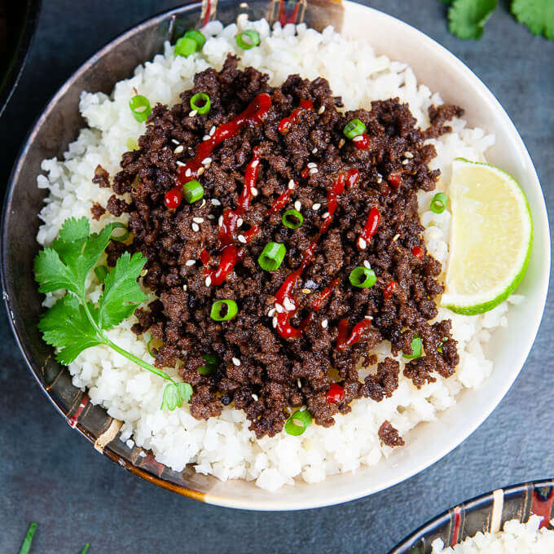

Keto Korean Beef Bowl

Description
A super simple, quick, and easy recipe perfect for dinner or lunch. This Keto inspired version of the Korean Beef Bowl cuts down the carbs without sacraficing flavor. A recipe I'm sure many will put into their lunch/dinner rotatation. Why not have it for breakfast too! A delicious meal for every occasion.
Ingredients
- 1 tbsp Sesame oil
- 1 pound 93% Lean ground beef
- 1 tsp Ground ginger
- 1 clove garlic, pressed
- 1/4 tsp chile flakes (omit if you prefer)
- 2 tbsp Tamari Soy Sauce reduced sodium
- 1 tbsp Siracha
- 1 tbsp Low carb brown sugar
- 1 tbsp White vinegar
- Juice of half a lime
- 1 1/2 cups Cauliflower rice
- Heat a 12 inch skillet with a tablespoon of sesame oil over medium high heat. Add the beef and cook it. As the beef cooks, break the meat up into small pieces with your spatula. Let the beef cook until it is lightly browned, about 4 minutes.
- Once the beef is lightly brown, add your pressed garlic, ground ginger, and chili flakes. Turn the heat to high and cook the beef until it is browned and crisp about 2 to 3 minutes.
- When the beef is brown and crisp, you can stir in the soy sauce, white vinegar, sugar substitute and Siracha. Cook another minute, stirring so the ingredients get well incorporated. They will thicken slightly. Turn the heat off and add a squeeze of lime.
- Serve over cauliflower rice and top with scallions and cilantro if desired. Enjoy!
- Serves 2 at 5 net carbs each.